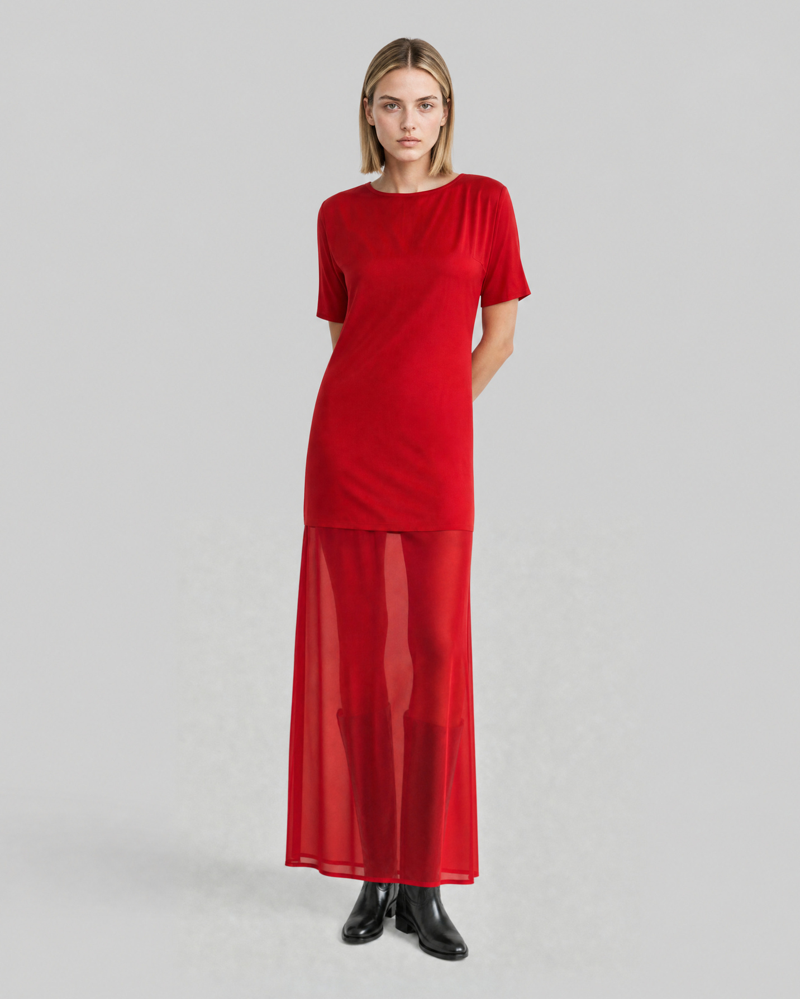
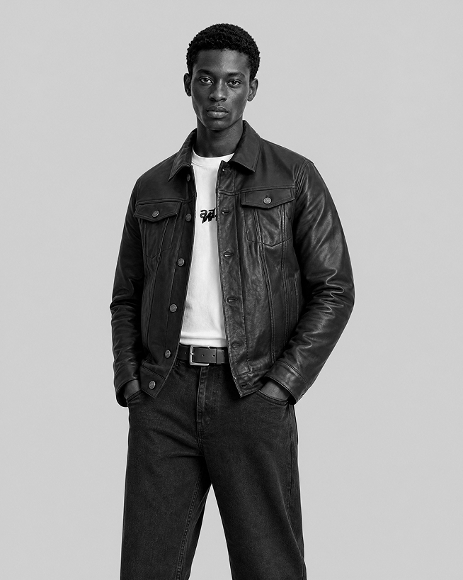
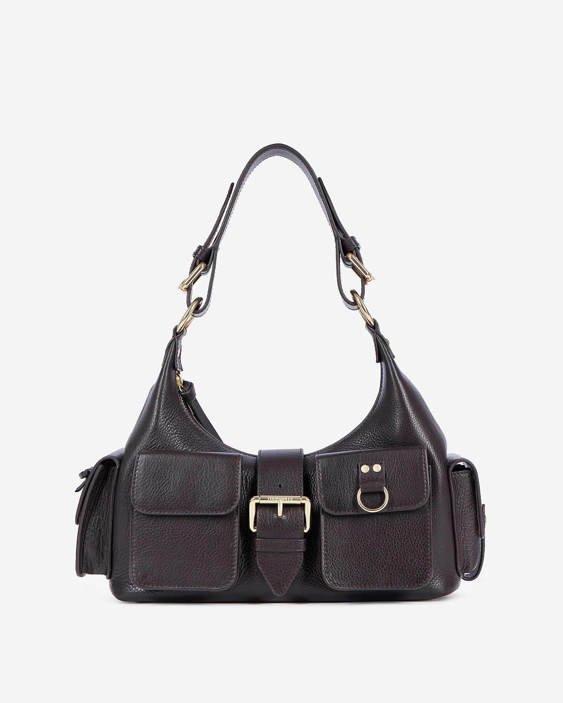

Le journal The Kooples : idées look et guide d'entretien
Une tenue pour chaque occasion, des conseils pour faire durer vos pièces en cuir, en laine, en soie ou en lin : tout pour choisir, porter et garder vos pièces.
Les plus lus
01
Quelle tenue chic pour une femme ? 6 looks à composer
Idées look · 6 min de lecture

Tenue de soirée femme : les robes pour briller cet hiver
Idées look · 5 min de lecture
Comment laver un pull en cachemire sans l'abîmer ?
Guide d'entretien · 4 min de lecture

Tenue de mariage femme : 5 looks d'invitée
Idées look · 5 min de lecture

Nettoyer et entretenir une veste en cuir
Guide d'entretien · 4 min de lecture

Comment nettoyer un sac en cuir
Taches, pluie, frottements : les bons gestes pour garder un sac en cuir comme au premier jour.
Lire l'articleIdées look
Mariage, soirée, bureau, baptême : une tenue pour chaque occasion, composée avec les pièces de la collection.
Quelle tenue chic pour une femme ? 6 looks à composer
6 min de lecture
Tenue de mariage femme : 5 looks d'invitée
5 min de lecture
Tenue de mariage homme : le costume et ses alternatives
5 min de lecture
Tenue de soirée femme : les robes pour briller cet hiver
5 min de lecture

Tenue chic homme : les pièces pour composer un look habillé
5 min de lecture

Tenue de baptême femme : 4 looks élégants
4 min de lecture
Guide d'entretien
Cuir, laine, soie, denim : les bons gestes pour laver, ranger et faire durer vos pièces.

Comment nettoyer des baskets blanches ?
4 min de lecture

Comment repasser une chemise sans faux plis ?
3 min de lecture

Comment enlever les bouloches d'un pull ?
3 min de lecture

Entretenir ses chaussures en cuir : le guide complet
4 min de lecture

Comment laver de la soie sans l'abîmer ?
4 min de lecture

Comment laver un jean pour qu'il garde sa couleur ?
3 min de lecture
Les pièces de nos articles
Retrouvez les pièces citées dans le journal dans nos collections.